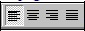
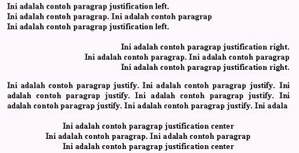
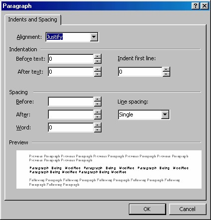

7. Mengatur perataan paragraf
7.1 Menggunakan tombol perataan
Untuk mengatur perataan adalah dengan cara menentukan pilihan pada item
Alignment, yaitu Left (rata kiri), Centered (rata tengah), Right (rata kanan), Justify
(rata kiri kanan). Kita juga bisa menggunakan tombol Align Left, Center, Right,
Justify pada toolbar ( ). Contoh hasil pengaturan, lihat Gambar 5.17.

Gambar 5.17 Justification Left, Right, Center, Justify
7.2 Menggunakan keyboard
Selain tombol-tombol perataan, Anda bisa menggunakan cara-cara berikut ini:
1. Pilihlah teks yang diinginkan.
2. Kemudian lakukan salah satu yang Anda perlukan:
• Untuk me-ratatengah-kan, tekanlah Ctrl+E
• Untuk meratakiri-kan, tekanlah Ctrl+L.
• Untuk me-ratakanan-kan, tekanlah Ctrl+R.
• Untuk me-ratakirikanan-kan, tekanlah Ctrl+J.
7.3 Menggunakan kotak dialog
Adapun langkah membuka kotak dialog Paragraph adalah:
1. Letakkan kursor pada paragraf yang akan diedit.
2. Dari menu Format pilihlah perintah Paragraph. Tampil kotak dialog
Paragraph seperti Gambar 5.18.
Dengan kotak dialog Paragraph tersebut kita bisa melakukan pengaturan perataan.
Bahkan bisa juga mengatur inden, mengatur spasi maupun mengatur jarak
antarparagraf.
7.4 Paragraf rata kiri kanan
1. Pastikan paragraf tersebut telah di-justify (rata kirikanan).
2. Tempatkan kursor di akhir baris terakhir paragraf.
3. Tekan Shift+Enter. FrontPage akan me-ratakanan-kan baris tersebut dan
memindahkan kursor ke baris berikutnya.

Gambar 5.18 Kotak Dialog Paragraph
Copyright © Herlan Lesmana
Created with the Freeware Edition of HelpNDoc: Create HTML Help, DOC, PDF and print manuals from 1 single source